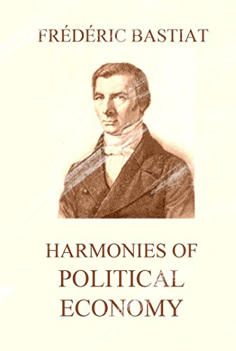

Harmonies of Political Economy
Harmonies of Political Economy is an 1850 book by the French classical liberal economist Frédéric Bastiat, in which the author applauds the power and ingenuity of the intricate social mechanism, "every atom of which ... is an animated thinking being, endued with marvelous energy, and with that principle of all morality, all dignity, all progress, the exclusive attribute of man - LIBERTY." While it is regarded as Bastiat's magnum opus, it was incomplete when it was published.
In the book, Bastiat writes of "the measureless disproportion" between what each of us contributes to society and what each of us receives in return. The American economist Amasa Walker commented that, "Of all the writers on the subject, no one seems to have been more full and clear in the definition and illustration of value" than Bastiat, in the distinction he draws in Economic Harmonies between value and utility.
Bastiat dedicated Harmonies of Political Economy to the youth of France.
Faça o Download da obra completa Aqui